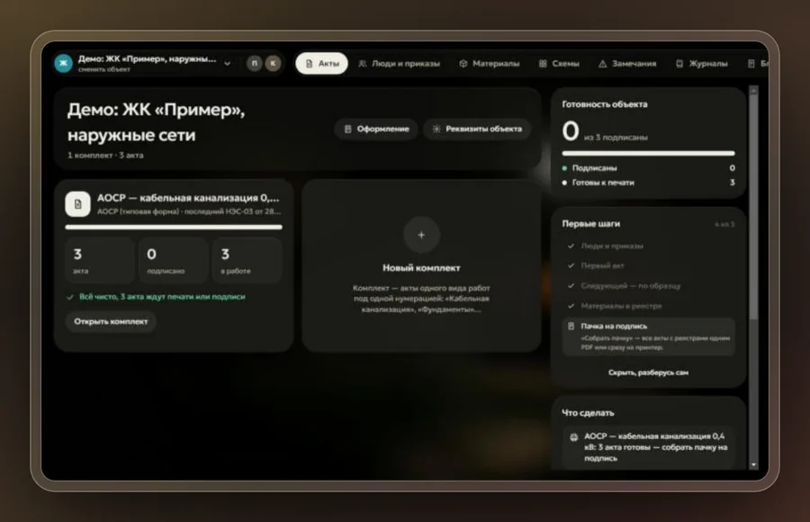
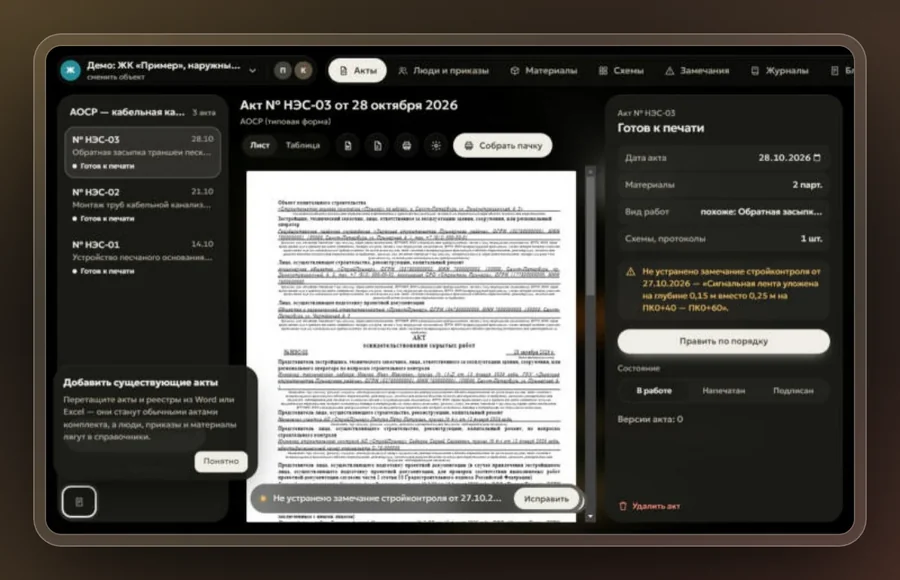
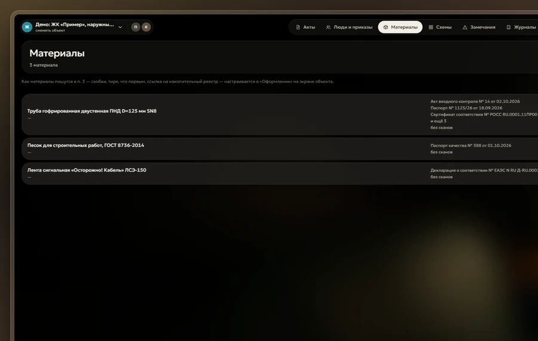

Actum
Акты, реестры и комплект по 344/пр
Actum — программа для Windows, в которой исполнительная собирается из справочника объекта. Данные лежат в папке на вашем компьютере, а не на чужом сервере.
Как это работает
Четыре шага от пустого объекта до комплекта. Справочник заполняется по ходу работы, отдельно садиться за него не нужно.
Создайте объект
Мастер спросит название, организации и представителей. Или загрузите готовые акты из Word: он разберёт их сам.
Заведите материалы
Материал и его поставки с паспортами и сертификатами. Сканы прикладываются прямо к поставке.
Добавляйте акты
Описание работ, даты и материалы. Организации и подписи акт берёт из справочника на свою дату.
Соберите комплект
Акты и реестры в Word и PDF, том со сканами документов о качестве.
Как это выглядит
Снимки Actum 1.0.5 на демо-объекте. Ничего не дорисовано.




Данные под присмотром
Исполнительная копится месяцами, и потерять её нельзя. Поэтому несколько вещей Actum делает сам, не спрашивая.
Всё в вашей папке
Объект — это обычная папка на диске. Её можно скопировать, перенести или положить в облако.
Копии каждый день
Копия объекта делается при открытии и закрытии в папку «Документы\Actum — копии» и хранится два месяца.
Обновления сами
Новая версия ставится в фоне. После обновления Actum покажет, что появилось, прямо на своих местах.
До скачивания
Чтобы после установки не было сюрпризов.
Windows 10 и 11
Версий для macOS и Linux нет.
Word или LibreOffice
Нужен для PDF, печати и точной разметки листа. Без него акты собираются в Word-файлы.
Бесплатно, идёт бета
Программа рабочая, но ещё растёт. Об ошибке или идее можно написать прямо из программы, через форму обратной связи.
Windows покажет синее окно. Так и должно быть
У установщика пока нет платной цифровой подписи, поэтому SmartScreen его не узнаёт. Нажмите Подробнее, затем Выполнить в любом случае. Это нужно один раз: обновления дальше ставятся сами.
Бета-тест, в котором вас слышно
Actum бесплатный, пока идёт бета. Взамен нужны ваши замечания: что неудобно, чего не хватает, где программа ошиблась.
Каждое принятое замечание попадает в пост об исправлении: что заметили, что поменяли и кто подсказал. Имя или ник указываем только с вашего согласия, без него — анонимно.
Вопросы
Можно перейти на Actum посреди объекта?
Да. Загрузите готовые акты из Word по форме 344/пр: они станут актами комплекта, которые можно править, а организации, люди и материалы попадут в справочники.
По какой форме собираются акты?
АОСР по форме из приказа Минстроя России № 344/пр. К каждому акту собирается реестр применяемых материалов.
Куда уходят мои данные?
Никуда: объект хранится в папке на вашем компьютере. Анонимная статистика отправляется, только если вы её разрешили, и содержимого актов в ней нет.
Подробно: политика конфиденциальности Actum.
Сколько стоит?
Пока идёт бета-тест, Actum бесплатный.
Нужен ли интернет?
Для работы нет. Интернет нужен, чтобы скачать установщик и получать обновления.
Попробуйте на своём объекте
Загрузите пару старых актов и посмотрите, что из них соберётся. Не подойдёт — удаляется как обычная программа.
Скачать Actum